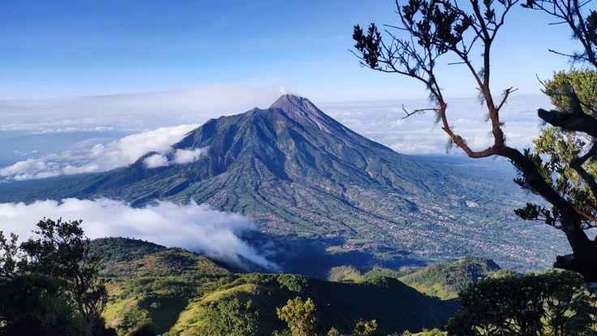
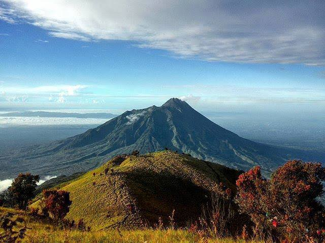

Gunung Lawu bukan sekadar gunung berapi tidak aktif setinggi 3.265 mdpl di perbatasan Jawa Tengah dan Jawa Timur. Bagi masyarakat Karanganyar, Lawu adalah penjaga, sumber air, dan ruang spiritual. Di lerengnya berdiri Candi Sukuh dan Candi Cetho, menjadi bukti betapa eratnya hubungan antara alam dan kepercayaan masyarakat sejak masa lampau.
Penjaga yang Membentuk Kehidupan
Sejak masa lampau, Gunung Lawu menjadi sumber air dan kesuburan bagi tanah di sekelilingnya. Udara sejuk pegunungan turut membentuk pertanian teh dan sayur, sementara lerengnya yang menyimpan Candi Sukuh dan Candi Cetho menjadikan Lawu bukan hanya ruang alam, tetapi juga ruang spiritual yang membentuk keseharian dan kepercayaan masyarakat Karanganyar.
"Gunung mengajarkan untuk tetap teguh; setiap langkah menuju puncak adalah kisah tentang keberanian, kesabaran, dan harapan."
Fakta Menarik
- Gunung Lawu memiliki ketinggian 3.265 mdpl dan menjadi jalur pendakian spiritual populer
- Kawasan ini menjadi rumah bagi Candi Sukuh dan Candi Cetho di lerengnya
- Udara sejuk pegunungan turut membentuk pertanian teh dan sayur di sekitarnya


Mengapa Penting?
Alam di sekitar Gunung Lawu bukan sekadar latar pemandangan, melainkan fondasi yang membentuk mata pencaharian, ritual, dan filosofi hidup masyarakat Karanganyar. Menjaga kelestariannya berarti menjaga akar dari seluruh budaya yang tumbuh di atasnya.